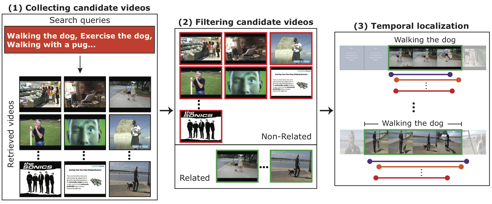

In spite of many dataset efforts for human action recognition, current computer vision algorithms are still severely limited in terms of the variability and complexity of the actions that they can recognize. This is in part due to the simplicity of current benchmarks, which mostly focus on simple actions and movements occurring on manually trimmed videos. We introduce ActivityNet, a new large-scale video benchmark for human activity understanding. Our benchmark aims at covering a wide range of complex human activities that are of interest to people in their daily living. In its current version, ActivityNet provides samples from 203 activity classes with an average of 137 untrimmed videos per class and 1.41 activity instances per video, for a total of 849 video hours. We illustrate three scenarios in which ActivityNet can be used to compare algorithms for human activity understanding: global video classification, trimmed activity classification and activity detection.
Our goal is to build an automatic system to retrieve videos depicting human activities. We heavily rely on the crowd and specifically, Amazon Mechanical Turk, to help acquire and annotate web videos. Our acquisition pipeline has three main steps: Collection, Filtering, and Temporal Localization.
See our ICMR 2014 paper for detailed information. Fabian Caba Heilbron and Juan Carlos Niebles. Collecting and Annotating Human Activities in Web Videos. In ICMR, 2014.